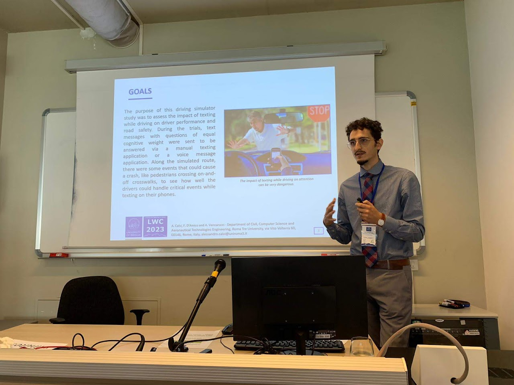
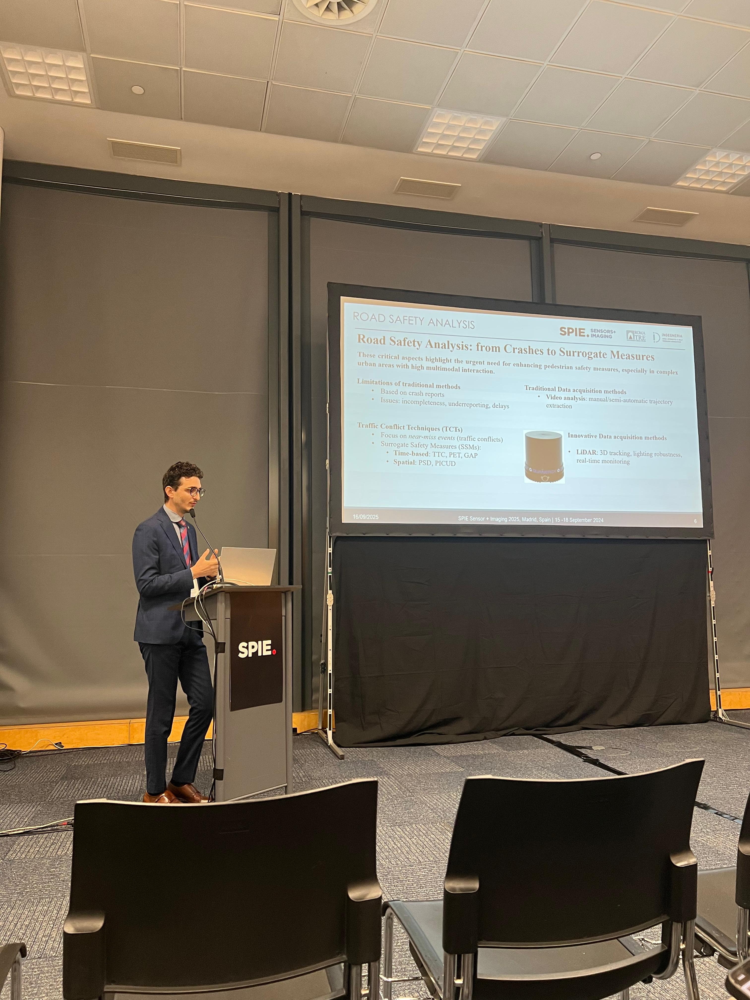
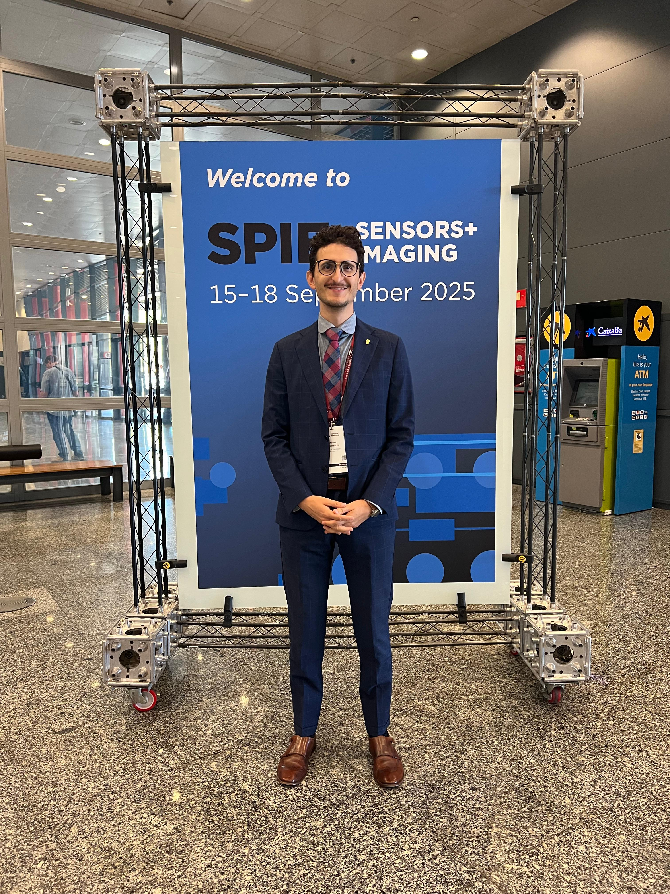
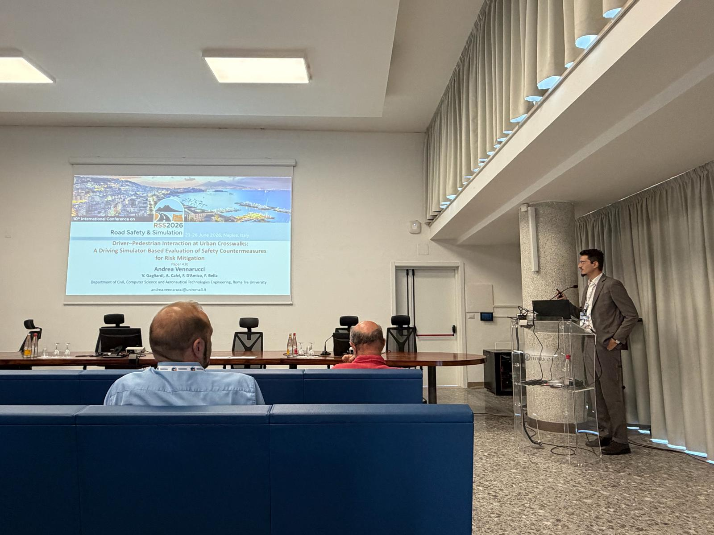
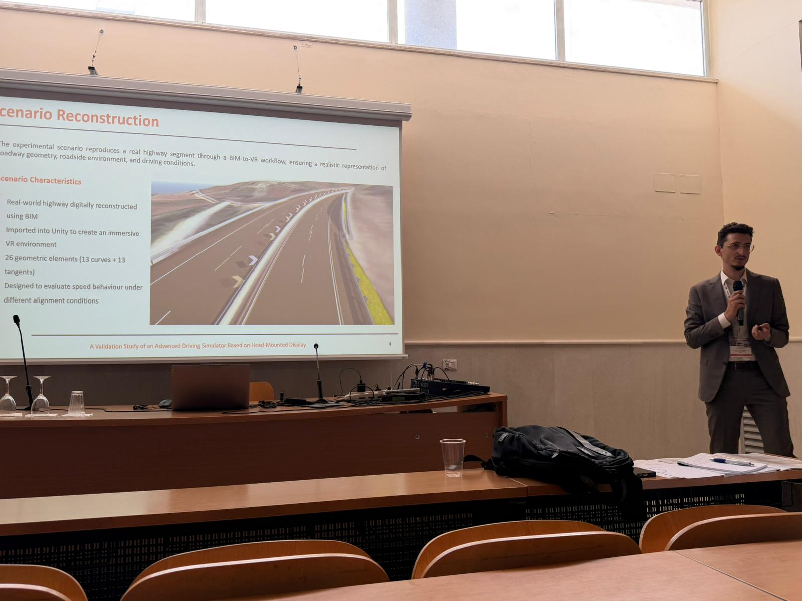
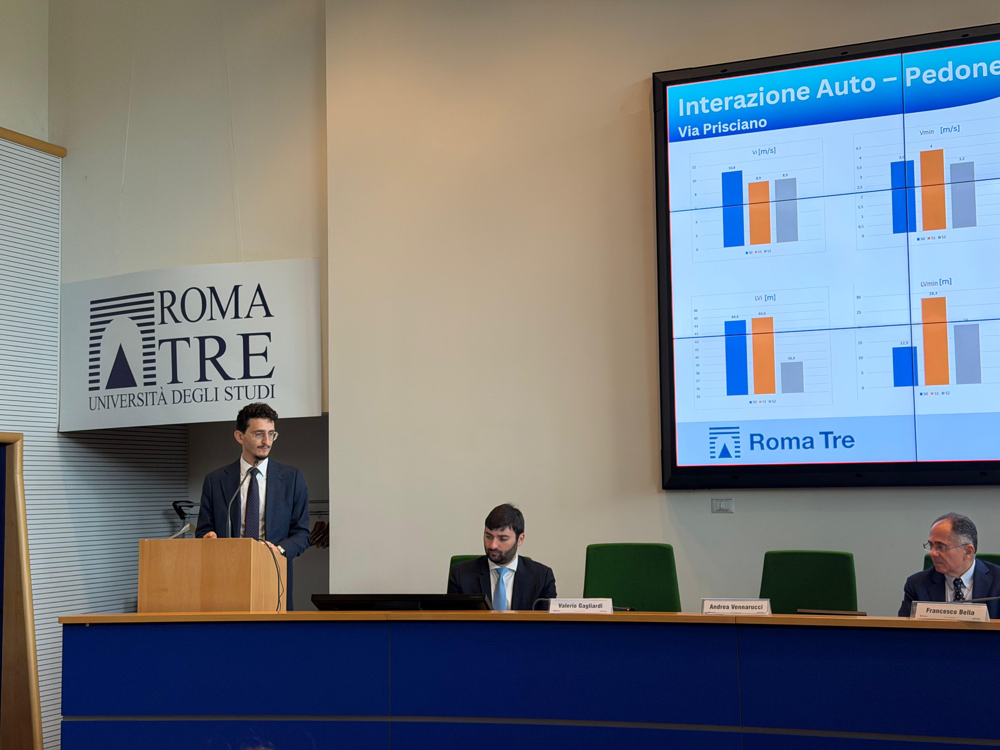

Comparing eye-tracking system effectiveness in field and driving simulator studies
Calvi, A., D’Amico, F., (2023). Open Transportation Journal, 17, 3.

A research path focused on Virtual Reality, Road Safety, Immersive Simulation, Digital Twins and emerging technologies for safer mobility systems.
My research activity focuses on the analysis of the Human Factor through advanced investigation and modelling methodologies. In particular, the study of User Behaviour represents a central research field, aimed at understanding the decision-making, perceptual and operational dynamics that characterize the interaction between road users, vehicles and the road environment.
Within this framework, an additional research area concerns co-simulation in virtual environments, with the objective of analysing complex systems in which multiple users interact simultaneously. Special attention is devoted to the mutual interference among different road users, a crucial aspect in understanding safety and risk-related phenomena, especially in interactions involving Vulnerable Road Users such as pedestrians and motorcyclists.
At the same time, the research explores the potential offered by metaverse paradigms and virtual reality technologies for the development of highly immersive and high-fidelity simulation scenarios. These environments integrate data collected through field investigations in order to ensure a realistic and ecologically valid representation of behaviours and operational conditions observed in real-world contexts.
Finally, a further area of development concerns the application of Building Information Modelling, particularly in relation to the implementation of Digital Twins. The objective is to create advanced simulation environments capable of dynamically integrating and analysing heterogeneous information, thus supporting the study of mobility and road safety phenomena within virtual, augmented and immersive contexts.
Selected publications in journals, conference proceedings and scientific venues.
Calvi, A., D’Amico, F., (2023). Open Transportation Journal, 17, 3.
Calvi, A., D’Amico, F., Mustone, V., (2023). Strade & Autostrade, 158, 203–208.
Calvi, A., D’Amico, F., (2023). 35th ICTCT Conference, Catania, Italy.
Calvi, A., D’Amico, F., (2024). European Transport, 97, 6.
Calvi, A., D’Amico, F., (2025). Transportation Research Procedia, 90, 710–717.
, Manalo, J.R.D., Gagliardi, V., Calvi, A., Bella, F. (2025). Proc. SPIE 13671, 136710A.
Calvi, A., (2026). Transportation Research Part F: Traffic Psychology and Behaviour, 116, 103440.
Scientific dissemination activities, conference presentations and research events.
Speaker at international conference. Topic: Digital Twins — Optimizing BIM-based software for enhanced virtual reality simulation based on Digital Twins.
Speaker at the 10th International Road Safety & Simulation Conference. Topics: HMD-based driving simulator validation and driver–pedestrian interaction at urban crosswalks.
Presentation on multi-perspective simulation in virtual reality within the ARCADE research project, with patronage from the Order of Engineers of Rome.
Co-author of a scientific poster on multi-source non-destructive testing survey for digital modelling and reconstruction.
Speaker. Topic: Real-Time LiDAR Applications for Assessing the Safety of Vulnerable Road Users at Urban Intersections.
Speaker. Topic: A Novel Co-Simulation Platform for Driving Performance Evaluation of Various Road Users.
Speaker. Topic: Distraction effects of manual texting and voice messaging when approaching pedestrian crossings on urban roads.
A visual sequence of research activities, conference presentations and academic dissemination moments.






Research as a bridge between human behaviour, digital technologies and safer infrastructure systems.
Return to the top of the page or use the navigation menu to explore the remaining sections of the website.